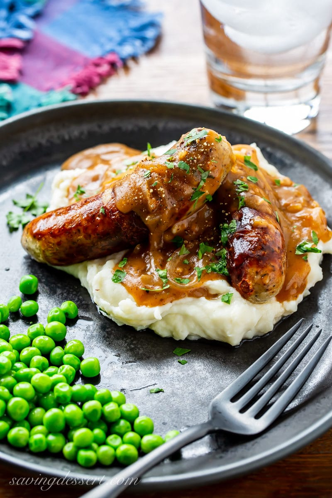

Yorkshire Pudding

Classic, hearty Bangers and Mash!
Ingredients
- Sausages
- Potatoes
- Butter
- Pinch of salt
- Cook the sausages in hot oil until well browned and cooked through. Remove to a plate and keep warm.
- Add the onions to the skillet and sauté until well browned. Stir in the garlic, tomato paste and thyme and cook until fragrant. Add the flour and cook another minute more. Pour in the beef broth and then Worcestershire. Bring to a simmer and cook until thickened.
- cook the potatoes in boiling salted water until fork tender. While the potatoes are cooking, combine the milk and butter and microwave until hot.
- Next, drain the potatoes and mash until smooth. Add the warm milk and butter mixture and blend until combine. Season with salt and pepper to taste. Cover and keep warm.